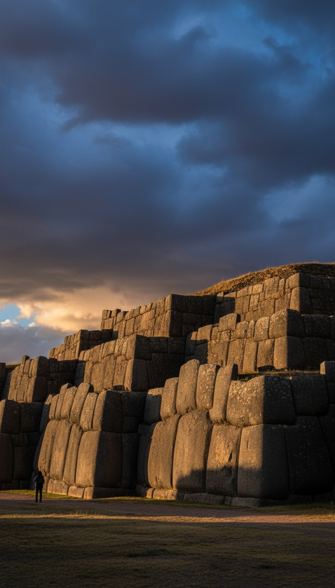

A fortress of hundred-ton stones stands on the ridge above Cusco, Peru, and not one human being in history ever wrote down how it was built.
The site is called Sacsayhuaman. Three zigzag tiers of limestone run nearly four hundred meters along the hilltop, stacked from blocks that outweigh loaded freight cars. There is no engineering document. There is no construction account. There is no testimony from a single worker who claims to have set one of those stones. For the largest megalithic wall in the Americas, the paper trail is a blank page. Everything below is about why that blank page is the loudest evidence on the mountain.

The Spanish Saw It First and Blamed Demons
Pedro Cieza de Leon, a Spanish soldier and chronicler who reached Peru in 1547, walked the walls and wrote in his Cronica del Peru, published in Seville in 1553, that the fortress deserved to rank among the greatest constructions on earth.
Garcilaso de la Vega had a closer view than any European. Born in Cusco in 1539 to an Inca princess and a conquistador captain, he played inside the fortress as a boy. In his Royal Commentaries of the Incas, published in Lisbon in 1609, he wrote that anyone who studied the walls closely would judge them the work of enchantment, built by demons rather than men. That is a native son of Cusco, raised on Inca oral history, telling you the walls did not read as human work even to the people living beside them.
Then the Spanish did something that quietly proves the whole case. They dismantled Sacsayhuaman for building material. Colonial Cusco, including its churches, is partly built from stones stripped off the fortress. With iron tools, wheels, oxen, and every technology the Inca never had, the Spanish hauled away only what they could manage. The blocks still standing on the hill today are the ones sixteenth century Europe could not move.
The Numbers That Break the Textbook
The largest blocks in the lower tier are estimated at 125 tons, with some calculations for the biggest stones reaching 200. They were cut from quarries miles from the site and brought up a mountainside to 12,000 feet of altitude.
The Inca toolkit, as taught in every university, contained no wheel, no iron, and no draft animal stronger than a llama. A llama carries about a hundred pounds. The transport problem is not hard. It is unsolved.
Jean-Pierre Protzen, professor of architecture at the University of California, Berkeley, spent years in the 1980s at the Inca quarries of Kachiqhata and Rumiqolqa testing period methods, and published his findings in the Journal of the Society of Architectural Historians in 1985. He demonstrated that hammerstones can dress and shape smaller blocks. The movement and precise seating of the giant blocks he could not reproduce, and he said so in print. The man who did the most rigorous hands-on study of Inca stonework in the twentieth century left the biggest stones on the table.
Modern reconstruction attempts with plant-fiber ropes and massed manpower have dragged blocks in the ten ton class across level ground. Sacsayhuaman's builders seated blocks ten times heavier, uphill, into a three-dimensional puzzle, hundreds of times over, and the ropes that could survive that work have never been produced by anyone.
A Knife Blade Cannot Pass Between Them
The blocks sit without a gram of mortar, fitted at tolerances measured in millimetres. Each stone is a unique polygon, interlocking with its neighbors on multiple faces at once. The famous twelve-angled stone in Cusco's Hatun Rumiyoc street gets the postcards, and blocks at Sacsayhuaman beat it for complexity.
On May 21, 1950, an earthquake tore through Cusco. Colonial buildings collapsed across the city, including the Dominican priory the Spanish had stacked on top of the Inca temple of Coricancha. The Inca walls underneath stood without shifting. The masonry the conquerors built with iron and mortar fell down. The masonry with no recorded method held the city up.
Think about what millimetre fitting means at this scale. To seat one irregular hundred-ton block against another, you test the fit, lift the block off, dress the faces, lower it again, and repeat until a knife blade cannot enter the joint. Every cycle means raising and lowering a hundred tons with precision. The wall contains hundreds of these joints. The official model asks you to accept that this was done with logs, ramps, and rope, and then asks you not to notice that nobody wrote down a single lift.
A knife blade cannot pass between stones that outweigh a blue whale. And not one builder ever left a record of setting them.
The One Construction Story That Survives Is a Catastrophe
Garcilaso preserved exactly one account of the Inca moving a Sacsayhuaman class megalith, and it is a disaster report. The stone is called the Saycusca, the tired stone, a block that never reached the fortress. In the Royal Commentaries he records that twenty thousand men hauled it across the mountains, that it fell at one point, and that it crushed three thousand of them. The stone, he wrote, wept blood.
Sit with what that means. The single documented attempt at moving one of these blocks with human muscle ended with the stone abandoned short of the walls and thousands dead. Meanwhile hundreds of larger blocks sit perfectly seated in the fortress with no record of any death, any rope, any ramp, any attempt. The one time the method the textbooks describe was recorded in action, it failed. The successes left no trace because the successes were achieved by something that was not that method.
The Builders the Inca Actually Named
When the Spanish asked who built the megalithic layer, the answer they recorded from local tradition was not a work crew. It was an earlier race. Cieza de Leon collected the same tradition at Tiwanaku near Lake Titicaca, where locals told him the great stones were raised in a single night by beings from before the age of the Inca, and he recorded coastal traditions of giants at Santa Elena where enormous bones were shown to the Spanish.
The stone softening tradition runs just as deep. Colonel Percy Fawcett, the British surveyor who mapped Bolivia and Peru for the Royal Geographical Society, recorded accounts of a jungle plant whose juice renders stone soft as clay, published in Exploration Fawcett in 1953. Look at the rounded, almost kneaded edges on certain Sacsayhuaman blocks and you understand why that tradition refuses to die.
Researchers Jan Peter de Jong and Christopher Jordan have documented mirror smooth, glass-like surfaces on Cusco stonework and argue the faces were exposed to intense heat. Vitrified surfaces, molded edges, and a native tradition of softened stone all point the same direction, and that direction is not a hammerstone.
An Empire That Counted Everything Recorded Nothing
The Inca were obsessive record keepers. The quipu system of knotted cords tracked censuses, tribute, herd counts, and warehouse inventories across an empire of ten million people. Spanish administrators marveled that the knots caught discrepancies their own ledgers missed.
An administration that logged every ear of maize in every storehouse kept no account of the largest construction project in its world. No labor tallies. No quarry records. No engineering tradition passed to the descendants the Spanish interrogated for decades.
There are two ways to get a silence that total. Either the record was destroyed with a thoroughness the Spanish never managed with anything else, or the Inca had nothing to record because they walked up that hill and found the walls already standing, and everything they added afterward was built on top of someone else's foundation.
The blank page is the evidence. The Spanish blamed demons because they could not move the stones with iron and oxen. The Inca pointed to giants and an age before their own. The Berkeley professor with the hammerstones published his results and left the biggest blocks unexplained. Four centuries of witnesses, and every one of them points away from the official story.
And Sacsayhuaman is not alone. The same oversized polygonal courses sit under Ollantaytambo, under Cusco's own streets, under temples across the Sacred Valley, always at the bottom, always the oldest layer, always the layer nobody can account for. Someone built the foundations of an empire and erased themselves from history while doing it. The Inca counted everything they ever owned. Ask yourself why the one thing missing from the record is the only answer anyone wants.
Before you go
7 books the Vatican doesn't want you reading. Free PDF, the texts they cut, with sources. Joined by 140+ Inner Circle members.
No spam. Unsubscribe anytime.
Go deeper
The Hidden Canon, Vol. I, Enoch. Jubilees. Thomas. Mary. Judas. 90 pages, 14 chapters, every receipt cited. The books your Bible quietly removed.
Read the Canon →Books that informed this investigation
As an Amazon Associate, Hidden Epoch earns from qualifying purchases. Cost to you: nothing.
Research safely
The VPN we use to research without being tracked. First 3 months free.
Get NordVPN →